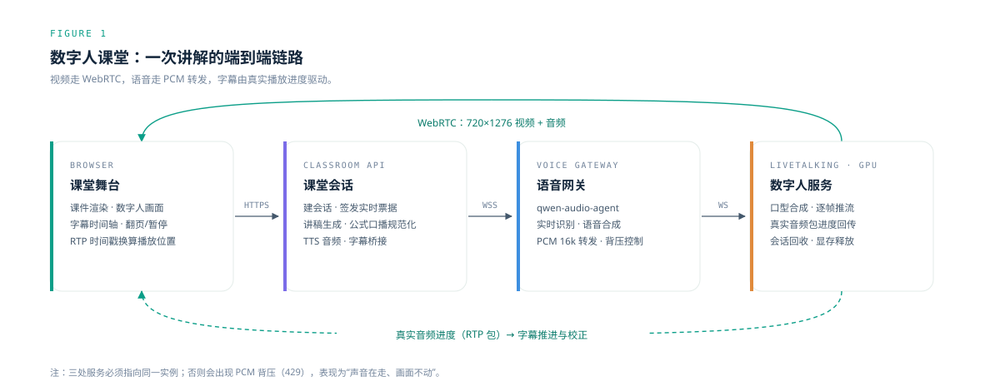
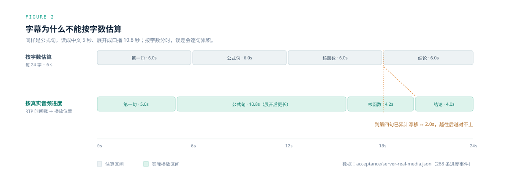
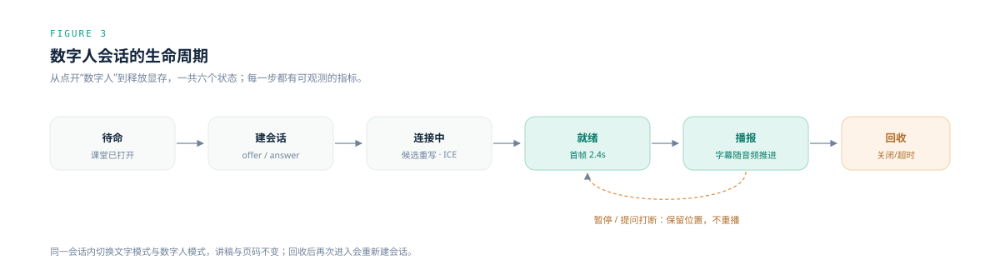

把真人教师，放进每一页课件
课堂会按上传的课件生成讲稿，公式先转成中文口播，再由数字人实时对口型；字幕跟着真实播放的音频走。这一页用六段录屏，把接入、逐页讲解、公式口播、讲稿面板、提问打断、文字模式逐个演示一遍。
六个功能，六段录屏
全部为真实课堂录制：课件是《模式识别》第十七讲，教师是数字人「小岚」，声音是课堂默认音色龙安鲁风。切换标签逐个看。
点一下「数字人」，课堂上多一位老师
课堂默认是文字模式，不占用 GPU。点顶部「数字人」后才发起 offer、完成候选地址重写与 ICE，右侧出现 720×1276 的教师画面；状态先显示“连接中”，首帧到达后变成“待命”，这时点「开始讲课」才会发声。
整个接入过程对老师是透明的：不需要选择形象、不需要配置音色，教师形象与默认音色都跟着课堂走。关闭数字人即释放会话，显存回收，下次进入重新建。
- 首帧 2.4 秒：服务器实测从点击到画面出现。
- 候选重写：跨网络访问 GPU 时，把不可达的候选地址改写成可达地址。
- 会话可控：关闭、超时都会回收，不会留下僵尸会话。
翻到哪一页，就讲哪一页
课堂按页建讲解单元：每一页有自己的讲稿与音频缓存。翻页时不会重建数字人会话，只切换当前讲解段落；上一页没讲完的内容不会补播，学生看到的是“跟着老师翻页”的节奏。
字幕的锚点也是页 + 音频进度：翻到新页时字幕清空并从新页第一句开始，不会把上一页的字幕带过来。讲解中暂停或退出，页码保持不变，回来接着讲。
- 页级缓存：同一页再次进入直接复用音频，不重复合成。
- 不重建会话：翻页只切换内容，视频连接保持。
- 页码不丢：退出数字人回到文字课堂，仍停在当前页。
公式先转中文，再合成语音
讲稿进入 TTS 前有一层口播规范化：上下标、分式、根号、求和、转置、内积、希腊字母与中英混排术语，都会展开成可朗读的中文。这一层与音色无关，换音色不影响读法。
演示里 Q、p、A、c 会被读成“二次项矩阵 Q”“一次项 p”“约束矩阵 A”“约束向量 c”，学生听到的与黑板上看到的是同一件事。规范化结果参与缓存键，规则升级后不会回放旧音频。
min ½‖w‖²→ “min，二分之一，w 的范数平方”max Σαᵢ − ½ΣΣαᵢαⱼyᵢyⱼxᵢᵀxⱼ→ 双重求和 + 转置内积的完整读法- 公式表达先转换为适合听讲的中文口播。
讲稿、笔记、Demo 都在手边
右栏保留三件与讲课直接相关的工具：讲稿是当前页正在讲的内容，可以对着看；笔记用来记录这一页的重点；Demo放这一页的交互演示。三者都在同一个课堂会话里，切换不会打断数字人。
讲稿与字幕同源：字幕是讲稿按音频进度切出来的片段，所以学生看到字幕、老师看到讲稿，指向的是同一句话。需要精讲时，老师可以直接对着讲稿补充，再让数字人继续。
- 讲稿 = 当前页文本，与 TTS 输入一致。
- 切换面板不暂停音频，不重建会话。
- 笔记与 Demo 跟页绑定，翻页即切换。
学生一问，课堂就停下来回答
讲解过程中可以直接在输入框提问。课堂会停止当前播报、保存页码与句子位置，用同一个音色回答；回答结束后回到这一页继续讲，不从头重播。
打断是可恢复的：页面不会跳、字幕不会错位、数字人会话也不会断。回答走的是同一条语音链路，所以学生听到的还是同一位老师的声音。
- 停当前句，保留页码与位置。
- 回答与讲解共用音色与会话。
- 不补播被打断的内容，避免“倒带”。
没有 GPU，也还是一间课堂
数字人需要一路 GPU 会话。并不是每间教室、每台设备都适合常开，所以课堂默认进入文字模式：同一份讲稿、同一个课堂会话，只是没有视频画面。学生仍能听讲解、看字幕、向课堂 Agent 提问。
文字模式也是降级路径：视频不可用时不会报错，而是回到可用的课堂。需要真人画面时随时点「数字人」切回去，页码与讲稿都不变。
- 不占用 GPU 会话，适合大班与移动端。
- 与数字人模式共用讲稿、页码与字幕。
- 切换不重新生成讲稿，也不从头播放。
技术方案：一条链路，三个关键点
视频、语音、字幕分别走三条通道，但在一次课堂会话里汇合。细节已经放在上面的六段演示里，这里展示整体架构与关键交互。

视频：会话可控
建会话、候选重写、首帧就绪、关闭回收，四个动作都有明确状态；单会话默认渲染 720×1276，关闭后立即释放显存。
WebRTC · ICE · 回收语音：音频即口型
课堂把合成好的音频推给数字人，口型由这段音频驱动；网关侧做 PCM 转发与背压控制，避免“声音在走、画面不动”。
PCM 16k · 背压字幕：以播放为准
不用字数估算，改用 RTP 时间戳换算播放位置，再由服务端回传真实音频包进度校正；暂停时字幕同步停住。
RTP · 进度回传

功能、实现与观测
| 功能 | 触发 | 实现要点 | 观测指标 |
|---|---|---|---|
| 接入数字人 | 点「数字人」 | offer/answer + 候选重写 + 会话登记 | 首帧 2.4s；会话回收 |
| 逐页讲解 | 开始讲课 / 翻页 | 页级讲稿 + 页级音频缓存 | 翻页不重建会话 |
| 公式口播 | 生成讲稿 | 公式规范化 + 音频复用 | 公式读法正确率 |
| 讲稿 / 笔记 / Demo | 右栏切换 | 同一会话内切换视图 | 不中断音频 |
| 提问打断 | 输入问题 | 停当前句 + 保存位置 + 同音色回答 | 回答后回到原句 |
| 文字模式 | 不连视频 | 共用讲稿与字幕 | 不占 GPU |